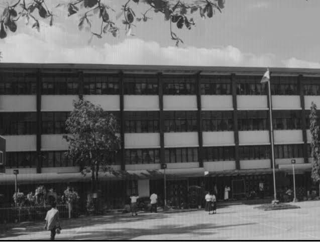

The university began in 1905 as Escuela Catolica de San Pedro along Bonifacio Street in downtown Davao City with only primary and intermediate courses. Then in 1934, when the high school department opened, the school was renamed Immaculate Conception Academy. After four years, during its first commencement exercise, however, it was again renamed Immaculate Conception Institute. The school closed during World War II, from 1941 to 1946. Post-war period Edit After the war, the school reopened in 1947 when it received government recognition as a high school. A year later, the school became Immaculate Conception College (ICC) as it started to offer college-level courses. The two initial courses were Collegiate Secretarial and Pharmacy. Between 1951 and 1958, four Bachelor of Science degree were introduced, namely: Education, Home Economics, Music, and Elementary Education. In 1961, the Liberal Arts Program was added along with majors in commerce and medical technology. In 1969, the Grade School and High School Departments were moved to ICC’s new site at Fr. Selga St., along with the College Department in 1971. Three more undergraduate majors were then added: namely, chemistry, nutrition & dietetics and a course on pharmacy aiding. From 1983 to 1986, master's degrees in theology and elementary education were introduced. The first engineering degree of the college, civil engineering, was also instituted during this time. A course on cafeteria management was also offered. In the 1990s, in response to the local needs in Davao, ICC added more engineering-focused majors in computer engineering, electronics engineering, and computer science. The graduate school was chosen by Fund Assistance for Private Education (FAPE) to be a training center in chemistry, physics, and engineering. More master of Arts degree courses were added in educational management, values education, teaching college physics, teaching college chemistry, and engineering education. On May 1, 1992, Department of Education Secretary Dr. Isidro Carino granted ICC university status, and it became “University of the Immaculate Conception”. The school was then 87 years old.[1] 2000 onwards Edit Since 2000, additional graduate programs in pharmacy, information technology, and information management have been instituted. The University also opened new undergraduate degrees in information technology and information management.[1] The university also launched an e-learning program – a web-based learning system serving all departments and sections of the university. Along with this, the Information Technology Research Zone (ITRZ), a computing facility, was built.
We commit ourselves to: 1. provide an excellent educational experience to students to help them become globally competitive and adaptive to change; 2. inculcate among students the values of serving others with humility and love, working for justice, promoting peace, and preserving the integrity of creation; 3. engage in research activities in collaboration with local, regional, national and international partners; 4. uphold the dignity of the persons especially the poor; 5. promote and strengthen our Filipino culture and values; and 6. administer the university following Catholic doctrine.
A globally recognized Catholic university that nurtures faith, builds passion for excellence and develops lifelong learners with compassion for service that impacts transformation in a fast-changing society.
to became an Ignacian Marian leader: a responsible global citizen imbued with profound faith in God, inspired by the spirituality of humble service, committed to a continuous search for excellence